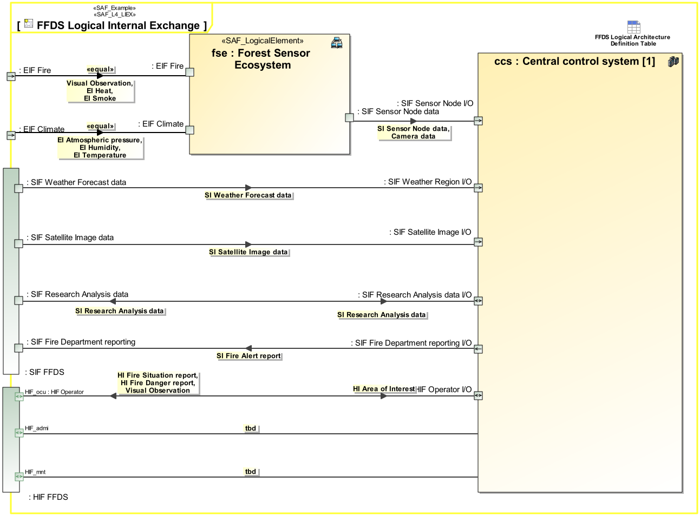

L4_LIEX Logical Internal Exchange Viewpoint
| Domain | Aspect | Maturity |
|---|---|---|
| Logical | Interaction & Collaboration |

The Logical Internal Exchange Viewpoint serves for the identification and definition of interfaces of elements of the logical system. also, the delegation of system element interfaces to the logical system boundary interfaces is covered. The Logical Internal Exchange Viewpoint
The Logical Internal Exchange Viewpoint supports the “System Architecture Definition Process” activities of the INCOSE SYSTEMS ENGINEERING HANDBOOK 2023 [§2.3.5.4] and contributes to the artifacts “System Architecture Description” and “System Interface Definition”.
One or more IBDs featuring the SOI boundary, the logical elements of the SOI, as well as the connectors for each identified SOI interface delegation to logical SOI elements. An interface is a connection resource for hooking on the logical SOI elements to other logical SOI elements. Item flows are defined for each exchange on the identified interface. Note: Please use more than one IBD focused on different areas of interest to keep the view comprehensive.
The following Stereotypes / Model Elements are used in the Viewpoint: